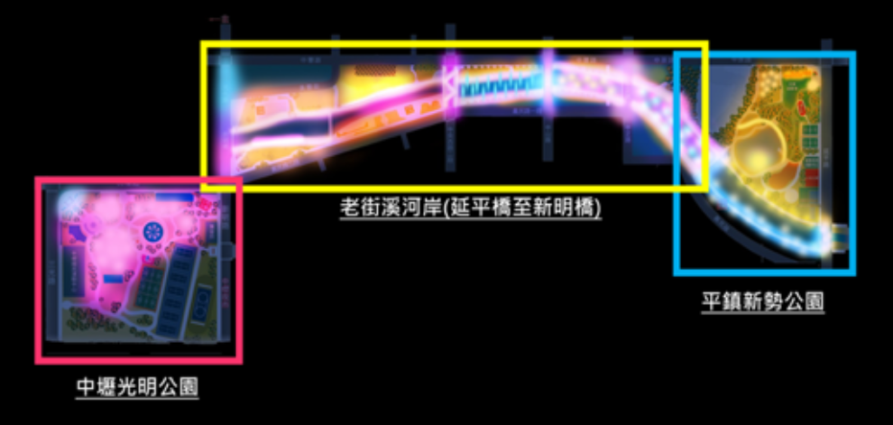

光之桃花源・選單
光之桃花源・選單


2022年桃園燈會活動規劃於光明公園、老街溪河岸及新勢公園等地舉辦，燈區設計上將光明公園打造一整片桃花林呈現過去桃園遍植桃花樹的景象；老街溪河岸規劃串連超過2公里光帶展現桃園在地文化內涵；而新勢公園則攜手國際藝術家製作出天空之城，呈現桃園未來城市意象。
策展理念
忽逢桃花林，夾岸數百步，中無雜樹，芳草鮮美，落英繽紛，漁人甚異之。復前行，欲窮其林。林盡水源，便得一山，山有小口，彷彿若有光。便舍船，從口入。(桃花源記) 這是我們都再熟悉不過陶淵明的桃花源記，在這部作品裡，作者虛構了一個寧靜安樂的世外桃源，那裡沒有壓迫、沒有戰亂，人人安居樂業，彼此和睦相處。而在2022桃園燈會-光之桃花源，我們在原有桃花源的架構下，透過「起」、「承」、「轉」、「合」的策展理念，並藉由光影科技及傳統花燈藝術融合運用下，賦予這座桃花源新想像、新風貌…
以光廊帶設計，北起中壢光明公園，南至平鎮新勢公園，並透過老街溪河岸串聯，打造2公里的河岸光廊。
以光為載體，呈現桃園這座城市的在地風采及多元文化的新風貌。
沿著光遊走時，現場的每一座裝置就是一頁篇章，光時而靜、時而動，跟隨著時間推移，探索路徑慢慢展露。
人們與生俱來，具有著飛翔的夢想，有了飛翔的能力，就能自在的往返所有夢想之地，而這座光之桃花源便是實現這個夢想的場域，讓大家跟著光，看見代表桃園高飛意象的天空之城，各式裝載著幾代桃園人情感的燈組，更看見一片繽紛亮麗的桃花林，而在這旅途中，陣陣傳來鄧雨賢老師經典名曲四季紅、月夜、望春風、雨夜花等，身臨其境，如夢似幻。
主視覺說明
主視覺由型男視覺藝術家安哲操刀，他希望跳脫以往傳統帶保守的視覺意象，呈現奇幻及魔幻般的色彩意象，在「2022年桃園燈會。光之桃花源」的主視覺設計上從象徵三個燈區色彩的光之精靈，如點燈人般地為桃園帶來璀璨、充滿希望的光芒，一掃2020年以來低迷全球氛圍，光之精靈跟著桃花源延伸的河岸來到巨樹茂密延伸的樹藤掛滿各式象徵希望的繽紛彩色燈籠，每個燈籠猶如在桃園築夢的人們，他們的光吸引著光之精靈，讓精靈看見積累桃園多元文化內涵，擁有無限夢幻想像的光之桃花源。